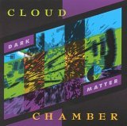

Home Artist links Label link

Cloud Chamber - Dark Matter
| Artist: | Cloud Chamber |
| Title: | Dark Matter |
| Label: | Supersaturated 001 |
| Length(s): | 59 minutes |
| Year(s) of release: | 1998 |
| Month of review: | [01/2004] |
Line up
Barry Cleveland - guitar
Michael Manring - bass
Michael Masley - bowhammer cymbalom, kalimba, dulcimer, gobeon, gobek, panpipes
Dan Reiter - cello
Joe Venegoni - percussion
Tracks
| 1) | Blue Mass | 4.35
|
| 2) | Full Of Stars | 11.07
|
| 3) | Solar Nexus | 6.59
|
| 4) | Ursa Minor | 11.11
|
| 5) | The Call | 4.47
|
| 6) | Dithryamb | 13.19
|
| 7) | Radiant Curves | 5.19
|
| 8) | Ghost Track | 2.35
|
Summary
Sent to me recently by Barry Cleveland, this is an album from 1998
which my cd player ranks as 'unclassifiable'. I was told this album
did quite well when it came out even while it was not really promoted
or anything. This is even stranger when you hear that the music on this
album is fully improvised.
The band also features Michael Manring, known for his
solo record Thonk and his albums with (Scott) McGill and Stevens.
The music
The first track, Blue Mass is a slow dark one featuring a mix
of tense percussion, chamber orchestra like playing on cello
and subtle effects on various less than familiar instruments.
The result is something which lies between the world music
oriented material of Tony Levin (think of his From The Caves Of The Iron
Mountain) and the more avant-garde noodlings of some of the Cuneiform
bands. The lengthy Full Of Stars continues on the same footing,
it seems like the musicians are still feeling their way into each
other at this point. The music on this song has a tendency to crawl
and gurgle and at times I wish they would stop noodling and get going.
Am I being impatient? Likely enough, although I don't mind laying
out jigsaw puzzles for 3000 pieces. Anyway, the band knows how to build
up atmospheres, being in this case dark and brooding most of the time,
reminiscent at times of the work by Robert Fripp on Soundscapes, but
then with lots of percussion intermixed.
Solar Nexus continues in the same vein again, although seemingly
a bit more cosmic, more psychedelic. The cello plays a prominent role
and do I in fact hear a dulcimer there? With the harp like playing,
the band now strikes a more friendly tone. The feel is now
Oriental. Along the way the pace comes in more and more, but don't
think they are about to derail or anything. When the pace sets in, the
music also becomes louder and ehm decisive.
On the longish Ursa Minor we see a similar build up although the music
has now become more percussive again, yielding a more world music type
feel. The final part even has a bit of an up-beat folky feel.
The melodic side of the band is not one that is accentuated. The music
seems to consist more of a flow, of patterns, recurring. This holds
for instance for The Call, a lively, frolic piece. However, if you listen
closely one can hear how the bass in this instance lays down a promising
melody, which slowly seems to evolve.
The music is close to avant-garde at this instant, also because of the
strings (seems like a violin to me, but it is not listed
among the instruments).
On Dithryamb, we get a bit of a laid-back groove going, laced with
violin like playing. This is (simply said) world music. Just before
we get halfway, the Frippian soundscapes come back in.
The train chugs along in the final third of this track, paving the way
for some nice Indian melodies on the bass.
Radiant Curves brings us to neo-classical with some flowing, dark
cello playing. In fact, the music is quite mellow and melodic here.
One might be reminded of some of the more classical work of After Crying
here.
There is a short ghost track, with harrowing effects and noise.
Is that why they did not include it on the booklet, so that people
would not sample it. Not for the faint of heart.
Conclusion
Hmm, world music and Frippian soundscapes are what this album is about.
This means eerie guitar work in the case of the latter, and plenty
of percussion in the case of the former and a rather free structure in the case of both. The music stays subdued mainly touching also on the
avant-garde at times. Although the band paints their brooding atmospheres
well, in me it leaves a desire for something more crunchy. Note that all
the music on this album was improvised, which is quite a feat.
© Jurriaan Hage